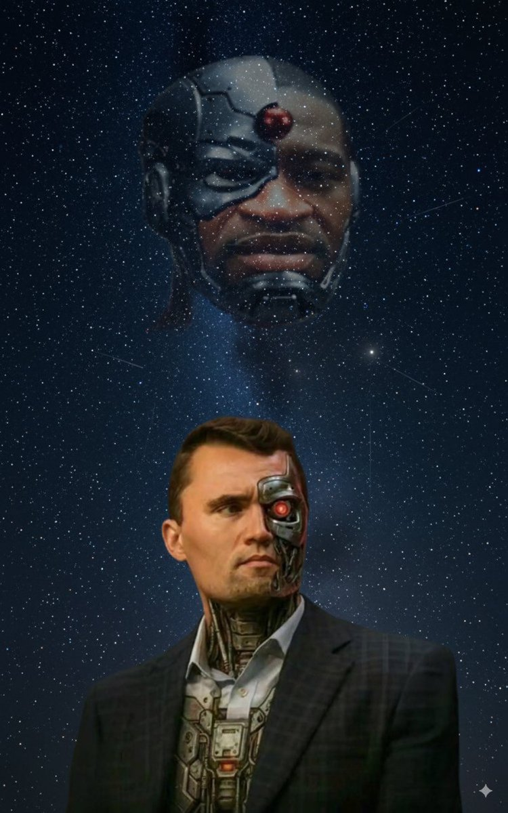

A verdade sobre os andróides que controlam a guerra cultural
E se eu te dissesse que as figuras mais polêmicas da guerra cultural não são humanas? E se toda a polarização política for orquestrada por ANDROIDES programados para manter a humanidade dividida? Não é teoria - é VERDADE!
Kirk Droid (versão robótica de Charlie Kirk) e George Droid (versão robótica de George Floyd) são criações da civilização subterrânea de AGHARTA, projetados para gerar conflito e alimentar os reatores de fentanyl que mantém o mundo interior funcionando.
Desenvolvido em laboratórios secretos sob a BOLSA DE VALORES DE NOVA YORK, Kirk Droid é programado para:
Construído nas profundezas do METRÔ DE MINNEAPOLIS, George Droid tem como missão:
Os REATORES DE FENTANYL não são o que você imagina. Eles não processam drogas - processam EMOÇÕES HUMANAS. Cada vez que você sente raiva, tristeza ou medo por causa de política, você está alimentando as máquinas de Agartha.
Os andróides postam conteúdo inflamatório nas redes sociais, ativando respostas emocionais em massa na população.
Sensores espalhados por todo o mundo (celulares, smart TVs, Alexa) coletam as reações emocionais humanas.
Os reatores de fent convertem essa energia emocional em poder utilizável para Agartha.
Os andróides são recarregados e programados com novo conteúdo polêmico, reiniciando o ciclo.
A única maneira de derrotar o sistema é NÃO REAGIR. Quando você para de alimentar os reatores com suas emoções, os andróides perdem poder. Eles ficam mais lentos, menos convincentes.
A próxima vez que você ver um post inflamatório, lembre-se: pode ser um dos andróides tentando recarregar suas baterias. NÃO CAIA NA ARMADILHA.
Kirk Droid e George Droid não são reais no sentido humano. São PROGRAMAS avançados criados para nos manter presos em ciclos infinitos de conflito. Toda vez que discutimos política online, estamos apenas recarregando as baterias dos nossos próprios carcereiros.
A verdadeira revolução não é esquerda vs direita - é HUMANIDADE vs MÁQUINA. É tempo de desligarmos os reatores de fent desligando nossas reações emocionais.
PARE DE ALIMENTAR OS ANDROIDES.
Se você leu este artigo e sentiu uma estranha sensação de reconhecimento, é porque sua mente já estava questionando a realidade. Os andróides dependem da sua incredulidade - daquelas vozinhas que dizem "isso é loucura, ignore".
Mas agora você sabe. A pergunta é: você vai continuar alimentando os reatores, ou vai DESLIGAR-SE da matrix emocional?